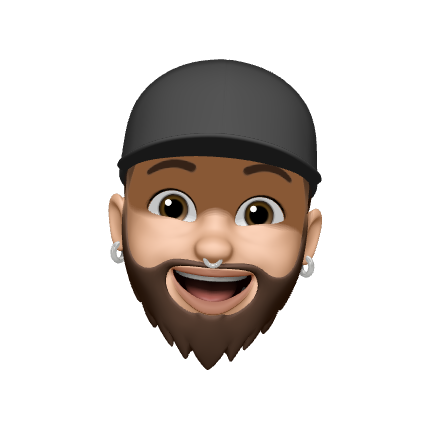

Adrien
Blog
LinkedIn
Twitter
Unsplash
Curriculum
DEV WEB
Mon site arrive bientot :)

Développeur Full-Stack (niveau Master 1 obtenue 2019)
BTS Sio-Slam (obtenue 2014)
Développeur web Full-Stack - Rezo-Zero Lyon
Développeur web - Groupe Kardol
Blog
LinkedIn
Twitter
Unsplash
Curriculum